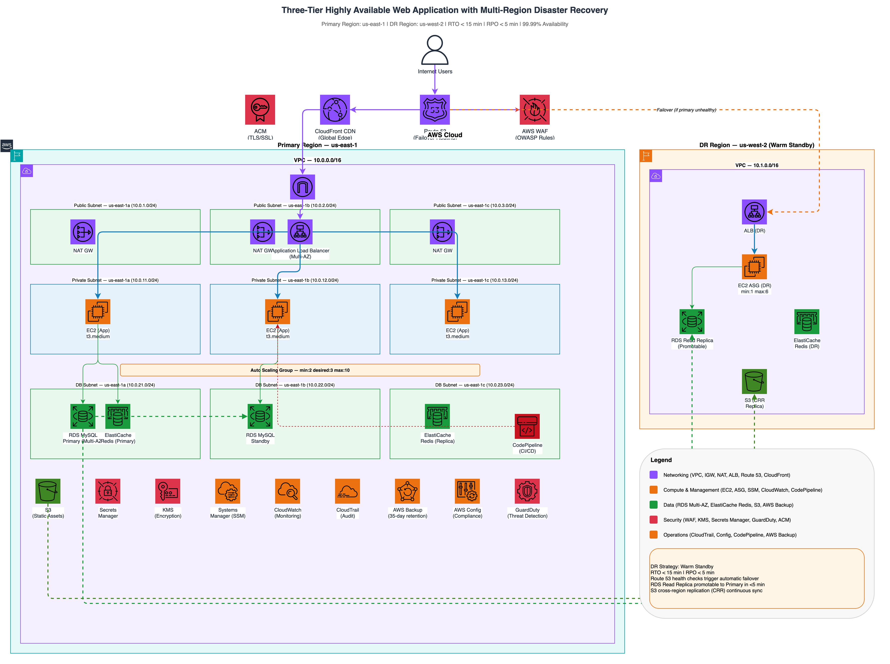

This is a complete walkthrough of how I designed a production-grade, three-tier web application architecture on AWS — built for high availability across three Availability Zones in us-east-1, with a warm standby disaster recovery site in us-west-2.
This post covers every decision: networking, compute, database, security, DR strategy, monitoring, cost, and the AWS Well-Architected Framework review. This is the kind of architecture I would present to an enterprise customer evaluating AWS for a mission-critical workload.

Business Requirements
Before drawing a single box, I define what the architecture must deliver:
- Availability target: 99.99% uptime (52 minutes of downtime per year)
- Recovery Time Objective (RTO): less than 15 minutes
- Recovery Point Objective (RPO): less than 5 minutes
- Traffic: 100,000 concurrent users at peak, with 10x burst capacity
- Compliance: PCI DSS — encryption in transit and at rest, audit logging, network segmentation
- Data: Relational database with ACID guarantees, caching layer for read-heavy workloads
- Deployment: Zero-downtime releases, automated rollbacks
These requirements drive every architectural decision below.
Architecture Overview
The architecture consists of four layers:
- Edge layer — Route 53, CloudFront, WAF, ACM
- Compute layer — Application Load Balancer, EC2 Auto Scaling Group
- Data layer — RDS MySQL Multi-AZ, ElastiCache Redis, S3
- Operations layer — CloudWatch, CloudTrail, AWS Config, GuardDuty, Backup, CodePipeline
The primary region is us-east-1 (N. Virginia) with a warm standby DR environment in us-west-2 (Oregon). Route 53 health checks monitor the primary ALB and automatically fail over to the DR region when the primary becomes unhealthy.
Networking Design
VPC and CIDR Allocation
Primary VPC (us-east-1): 10.0.0.0/16
This gives us 65,536 IP addresses with room to grow. I split across three Availability Zones (us-east-1a, us-east-1b, us-east-1c) with three subnet tiers per AZ:
| Subnet Tier | AZ-a | AZ-b | AZ-c | Purpose |
|---|---|---|---|---|
| Public | 10.0.1.0/24 | 10.0.2.0/24 | 10.0.3.0/24 | ALB, NAT Gateways |
| Private App | 10.0.11.0/24 | 10.0.12.0/24 | 10.0.13.0/24 | EC2 (application tier) |
| Private DB | 10.0.21.0/24 | 10.0.22.0/24 | 10.0.23.0/24 | RDS, ElastiCache |
DR VPC (us-west-2): 10.1.0.0/16 — non-overlapping CIDR is critical if VPC peering or Transit Gateway is ever needed between the regions.
Why Three Tiers of Subnets?
This enforces the principle of least privilege at the network layer. The public subnet is internet-reachable — only the ALB and NAT Gateways sit here. The private app subnet can reach the internet only through the NAT Gateway — one-directional outbound. The private DB subnet has no route to the internet at all; the only allowed inbound is from the application tier security group.
An attacker who compromises the web tier cannot directly reach the database. Each layer is an independent blast radius boundary.
Internet Gateway and NAT Gateways
Three NAT Gateways are deployed — one per Availability Zone. This eliminates cross-AZ NAT traffic (which costs money and adds latency) and removes the NAT Gateway as a single point of failure. Deploying only one NAT Gateway is a common architecture mistake in cost-optimized designs that sacrifice reliability.
Edge Layer
Route 53 — Failover Routing
Route 53 is configured with two A record sets: a Primary pointing to the CloudFront distribution (us-east-1), and a Secondary pointing to the DR ALB (us-west-2). Route 53 health checks poll the primary endpoint every 10 seconds from multiple global health checker locations. If three consecutive checks fail, Route 53 activates the failover record. DNS TTL is set to 60 seconds for fast propagation.
If the primary region fails at minute 0, health checks detect it within 30 seconds, Route 53 switches at 30 seconds, and DNS propagates globally within 90 seconds — well under 15 minutes RTO.
CloudFront — Global Content Delivery
CloudFront sits in front of the ALB with two behaviors: static assets (/static/*) cached at edge locations with a 7-day TTL served from S3, and dynamic requests forwarded to the ALB with caching disabled. Origin Access Control (OAC) ensures CloudFront is the only entity that can read the S3 bucket — the bucket policy denies all other access.
AWS WAF — Web Application Firewall
WAF is attached to CloudFront (not the ALB) so filtering happens at the edge before traffic reaches your infrastructure. Rule groups: AWSManagedRulesCommonRuleSet (OWASP Top 10), AWSManagedRulesSQLiRuleSet, AWSManagedRulesAmazonIpReputationList, plus rate limiting at 2,000 requests/IP per 5 minutes. Attaching WAF to CloudFront means malicious traffic is dropped at the edge — never reaching your VPC — and you pay for WAF WCUs on far less traffic since cached requests bypass WAF on cache hits.
Compute Layer
Application Load Balancer
The ALB operates in the public subnets across all three AZs. HTTPS/443 listener with ACM certificate — HTTP/80 redirects to HTTPS. The ALB security group allows inbound 443 only from the CloudFront managed prefix list. This prevents WAF bypass attacks where an attacker finds your origin ALB DNS name and hits it directly.
EC2 Auto Scaling Group
The ASG spans all three private app subnets:
- Minimum: 2 — ensures capacity during AZ failure
- Desired: 3 — one per AZ for even distribution
- Maximum: 10 — handles 10x traffic surge
Scaling policy: Target tracking on ALBRequestCountPerTarget = 1,000 requests per instance. Launch template requires IMDSv2 (disables SSRF attacks on the metadata endpoint) and uses IAM instance profiles with least-privilege permissions — no long-term access keys on any EC2 instance. SSM Session Manager replaces SSH; no bastion host required.
Data Layer
RDS MySQL — Multi-AZ
RDS MySQL with Multi-AZ deploys a primary instance (active, receives all reads and writes) and a standby instance (passive, synchronous replication, in a different AZ). Multi-AZ is a high availability solution, not a read scaling solution — RDS fails over automatically in 60–120 seconds without any application change.
Key configuration: db.r6g.large (Graviton2 — 10% better price/performance), 500 GB gp3 with autoscaling to 2 TB, encryption at rest via KMS, automated backups with 7-day retention. The database security group allows inbound 3306 only from the application tier security group.
Application retrieves credentials from AWS Secrets Manager at startup. Secrets Manager auto-rotates RDS credentials on a 30-day schedule. No hardcoded credentials anywhere in the codebase or launch templates.
ElastiCache Redis — Caching Layer
Redis with Multi-AZ and automatic failover used for: session storage (eliminating the need for ALB stickiness — enabling truly stateless EC2), database query result caching with TTLs of 5–60 minutes, and rate limiting counters with atomic increments.
S3 — Static Assets and Cross-Region Replication
The primary S3 bucket serves images, CSS, and JS via CloudFront OAC. S3 Cross-Region Replication (CRR) copies every new object to the DR bucket in us-west-2 within minutes. The DR CloudFront distribution uses this replica bucket as its origin — so static assets are always current in the DR region.
Security Design
Defense in Depth
| Layer | Control |
|---|---|
| Edge | WAF (OWASP rules, rate limiting), CloudFront (TLS 1.2+), Shield Standard |
| Network | Security groups (stateful, least privilege), VPC isolation, private subnets |
| Compute | IMDSv2, instance profiles (no long-term keys), SSM Session Manager (no SSH) |
| Data | RDS encryption (KMS), S3 SSE-KMS, TLS for all in-transit connections |
| Detection | GuardDuty (threat intelligence), AWS Config (compliance rules), CloudTrail (API audit) |
Security Groups — Layered Micro-Segmentation
Four security groups form a chain: ALB-SG (inbound 443 from CloudFront prefix list) → App-SG (inbound 8080 from ALB-SG) → DB-SG (inbound 3306 from App-SG) → Cache-SG (inbound 6379 from App-SG). Each tier references the tier above it as source — not a CIDR range. Even a fully compromised EC2 instance cannot reach the database directly.
Disaster Recovery Strategy
Warm Standby — Why This Tier
| DR Tier | RTO | RPO | Cost |
|---|---|---|---|
| Backup and Restore | Hours | Hours | Lowest |
| Pilot Light | 30–60 min | Minutes | Low |
| Warm Standby ✓ | 5–30 min | Minutes | Medium |
| Active-Active | Near zero | Near zero | Highest |
Failover Sequence
- T+0: Primary region event (AZ failure, region failure, or application failure)
- T+30s: Route 53 health checks detect primary ALB unhealthy
- T+60s: Route 53 activates failover record pointing to DR ALB in us-west-2
- T+90s: DNS TTL expires, traffic begins routing to DR region
- T+2m: On-call engineer promotes RDS Read Replica to standalone primary
- T+3m: DR ASG scales from 1 to 3+ instances
- T+5m: Application fully operational in DR region
- T+15m: ASG scales to full capacity, all systems normal
Cost Analysis
| Service | Specification | Est. Monthly |
|---|---|---|
| EC2 ASG | 3× t3.medium On-Demand | ~$90 |
| ALB | ~1M requests/day | ~$25 |
| RDS MySQL | db.r6g.large Multi-AZ, 500 GB | ~$250 |
| ElastiCache | cache.t4g.medium, 1 primary + 1 replica | ~$70 |
| NAT Gateways | 3×, 100 GB/month data | ~$130 |
| CloudFront | 1 TB/month data transfer | ~$85 |
| WAF + Route 53 + S3 | ~$45 | |
| GuardDuty + CloudWatch | ~$55 | |
| Primary Region Total | ~$750/mo | |
| Total incl. DR Region | (+30% for warm standby) | ~$950/mo |
Reserved Instances (1-year, no upfront) on RDS and EC2 reduce this by approximately 40% (~$380/month savings). Use Savings Plans for additional EC2 savings. With optimizations, total cost drops to approximately $570/month.
AWS Well-Architected Review
- Operational Excellence: All infrastructure in Terraform (reproducible, version-controlled). Automated deployments via CodePipeline — no manual changes to production. CloudWatch dashboards for proactive monitoring.
- Security: All data encrypted at rest (KMS CMK) and in transit (TLS 1.2+). Zero trust network design. No long-term access keys — all access via IAM roles. GuardDuty, CloudTrail, and Config provide continuous detection and compliance.
- Reliability: Multi-AZ eliminates single AZ as a single point of failure. RDS Multi-AZ provides automatic database failover in 60–120 seconds. Auto Scaling restores capacity after instance failure automatically. Route 53 health checks enable cross-region failover under 15 minutes.
- Performance Efficiency: CloudFront reduces origin load by caching static assets globally. ElastiCache reduces database query load for read-heavy operations. Graviton2 RDS instances provide better price/performance than x86.
- Cost Optimization: Auto Scaling ensures compute cost scales with actual demand. Reserved Instances for predictable baseline capacity. S3 lifecycle rules automatically tier infrequently accessed data.
- Sustainability: Graviton2 instances use up to 60% less energy than equivalent x86. Auto Scaling eliminates idle capacity. CloudFront reduces total bytes transferred from origin.
Key Lessons for Solutions Architects
1. Multi-AZ vs Multi-Region are fundamentally different problems. Multi-AZ protects against hardware failures within one data center campus. Multi-Region protects against regional events. Most workloads need Multi-AZ. Far fewer need Multi-Region. The business cost of the RTO/RPO requirement should drive the DR tier choice — not what looks most impressive on a diagram.
2. The database is always the hardest part of DR. Compute and networking fail over quickly with automation. The database requires special handling: promoting a read replica, re-pointing connection strings, handling in-flight transactions. Plan this before you need it, and practice it quarterly.
3. Security groups are stateful — use them like firewalls, not rules. The most common misconfiguration I see is overly permissive security groups with 0.0.0.0/0 on ports that should only accept traffic from specific sources. Every security group in this design references another security group as the source, not a CIDR.
4. NAT Gateway costs surprise every team eventually. NAT Gateway data processing charges ($0.045/GB) add up fast. Use VPC Gateway Endpoints for S3 and DynamoDB (free) and VPC Interface Endpoints for SSM and Secrets Manager to eliminate the majority of NAT data charges.
5. Test your DR plan — regularly. An untested DR plan is not a DR plan. This architecture includes a quarterly DR exercise where the team actually simulates a failover and validates that RTO/RPO targets are met. Finding gaps during an exercise is far better than discovering them at 2 AM during an actual incident.
Explore the full architecture
The Draw.io diagram with AWS icons, color-coded tiers, and DR region is available on the architecture page. Terraform code and runbooks are in the GitHub repository.
View Architecture Diagram → View on GitHub →